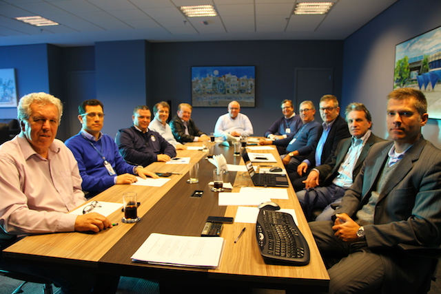

CONSELHO DE ADMINISTRAÇÃO
Como forma de aprimorar continuamente a gestão do Grêmio Foot-Ball Porto Alegrense, baseada nos preceitos da transparência e da tomada de decisão mais assertiva ao Clube, todas as segundas-feiras, a partir das 17h, o presidente do Conselho de Administração (CA), Romildo Bolzan Jr, se reúne com os seus vices para debater temas intra e extracampo. O colegiado é formado pelos vice-presidentes Adalberto Preis, Claudio Oderich, Marcos Herrmann, Duda Kroeff, Sergei Ignacio da Costa e Paulo Luz; pelo CEO do Clube, Gustavo Zanchi; pelo chefe de gabinete, Marco Bobsin; e pelos secretários, Carlos Humberto de Amodeo Neto e Tiago Brum.
As pautas são organizadas por ordem de prioridade e apresentadas pelo CEO. Além disso, também é permitida, aos demais participantes da mesa, a proposição de temas atinentes ao universo do Clube. O colegiado delibera em busca de um consenso entre todas as partes. Governança, investimentos, planejamento estratégico, todas as nuances relacionadas ao futebol, como contratações, negócios com atletas, comissão técnica, definição de estratégias aplicadas às categorias de base, são alguns dos assuntos debatidos no encontro. Outros assuntos abordados nas reuniões do CA são os que se referem aos negócios digitais do Clube, demandas de recursos humanos, marketing, quadro social, loja GrêmioMania, licenciamento e análise mensal dos resultados financeiros.